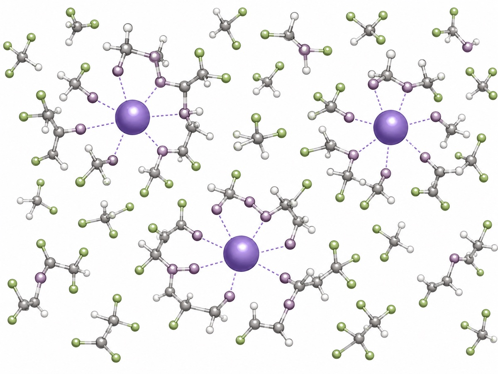

Liquid Electrolytes
Solvation and Ionic Transport
How does molecular design reshape solvation environments, ion transport, interfacial reactions, and SEI formation in sodium-metal batteries?
ApproachMolecular dynamics, solvation analysis, and interfacial chemistry models connect local coordination to transport and stability.
Methods
MDDFTSolvation analysisInterfacial modelling
Systems
Liquid electrolytesLHCEFluorinated etherSodium metalSEI formation